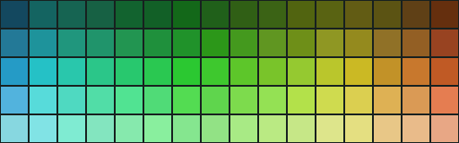

SONY α7 IV / ILCE-7M4
相机滤镜库
19 款训练完成的色彩风格。下载机身滤镜，或在 Lightroom 中使用配套配置文件。

如何阅读误差
ΔE00 越小，预测颜色越接近目标。各款均在同一组 9,082 个留出色块上统计机身 JSON 的模型输出。P95 表示 95% 的色块误差在该数值以内。实际拍摄效果随场景和光线变化。
下载格式与日期
机身 JSON 供支持自定义滤镜的 α7 IV 项目固件导入。LR XMP 可在 Lightroom 的配置文件浏览器中导入。更新日期取该款 JSON 与 XMP 配套验收完成的香港日期。
富士FUJIFILM
| 滤镜名称 | 平均 ΔE00 | P95 | 更新日期 | 下载 |
|---|---|---|---|---|
| PROVIA | 1.90 | 4.73 | 机身 JSONLR XMP | |
| Velvia | 2.21 | 5.47 | 机身 JSONLR XMP | |
| ASTIA | 1.86 | 4.65 | 机身 JSONLR XMP | |
| CLASSIC CHROME | 1.77 | 4.53 | 机身 JSONLR XMP | |
| CLASSIC Neg. | 1.97 | 4.48 | 机身 JSONLR XMP | |
| NOSTALGIC Neg. | 1.76 | 3.99 | 机身 JSONLR XMP | |
| REALA ACE | 2.19 | 4.90 | 机身 JSONLR XMP | |
| PRO Neg. Hi | 1.83 | 4.48 | 机身 JSONLR XMP | |
| PRO Neg. Std | 1.70 | 4.12 | 机身 JSONLR XMP | |
| ETERNA | 1.61 | 3.73 | 机身 JSONLR XMP | |
| ETERNA BLEACH BYPASS | 1.58 | 3.48 | 机身 JSONLR XMP | |
| ACROS | 1.18 | 3.18 | 机身 JSONLR XMP |
理光RICOH
| 滤镜名称 | 平均 ΔE00 | P95 | 更新日期 | 下载 |
|---|---|---|---|---|
| 理光正片 | 1.30 | 2.89 | 机身 JSONLR XMP | |
| 理光负片 | 1.30 | 2.65 | 机身 JSONLR XMP |
柯达KODAK
| 滤镜名称 | 平均 ΔE00 | P95 | 更新日期 | 下载 |
|---|---|---|---|---|
| Portra 400 B Balanced，平衡版。把灰阶校准到中性，灰色更少带色。 | 1.57 | 3.41 | 机身 JSONLR XMP | |
| Portra 400 NB Non-Balanced，非平衡版。保留胶片和扫描过程中测得的特征性色偏，灰阶也可能带有轻微色调。 | 1.69 | 3.70 | 机身 JSONLR XMP |
徕卡LEICA
| 滤镜名称 | 平均 ΔE00 | P95 | 更新日期 | 下载 |
|---|---|---|---|---|
| Leica M9 Standard | 1.34 | 3.06 | 机身 JSONLR XMP | |
| Leica M9 Embedded | 1.35 | 3.16 | 机身 JSONLR XMP | |
| Leica M10R Standard | 1.26 | 2.67 | 机身 JSONLR XMP |